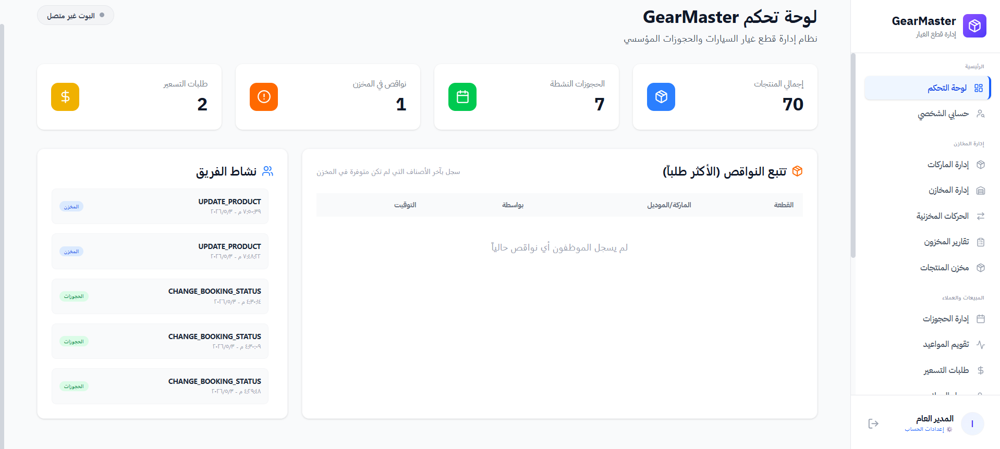
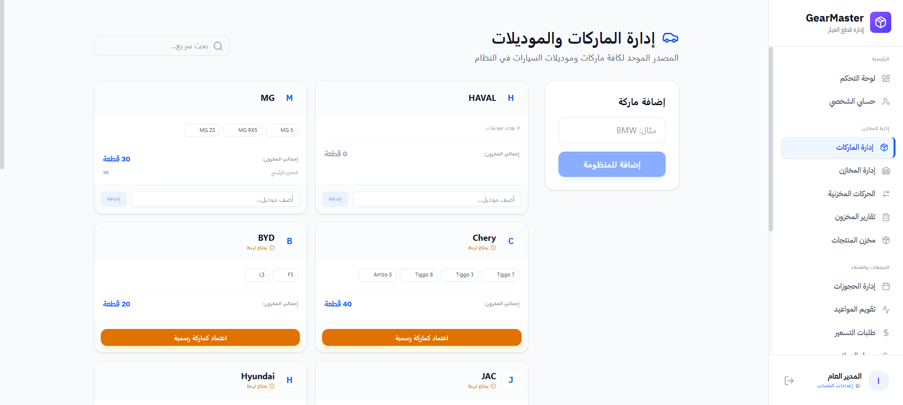
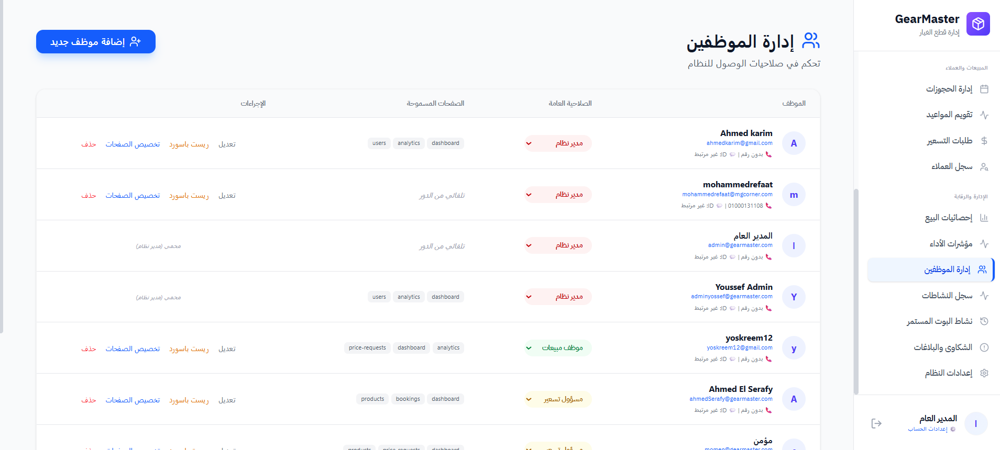
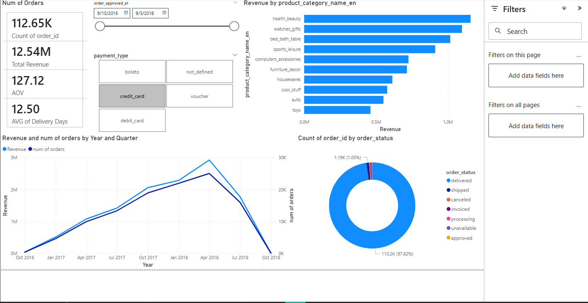
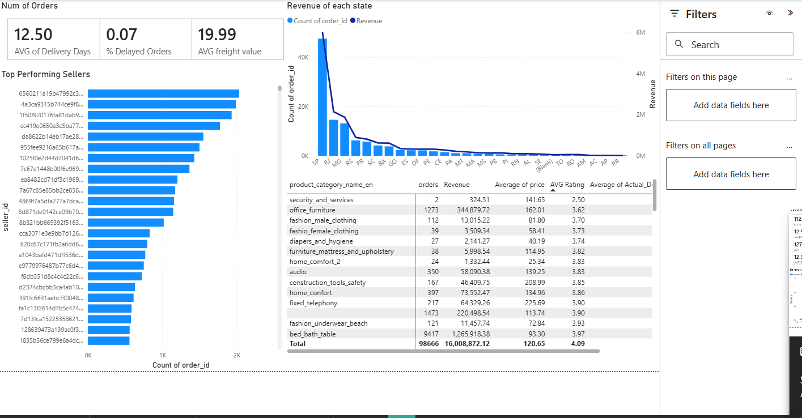
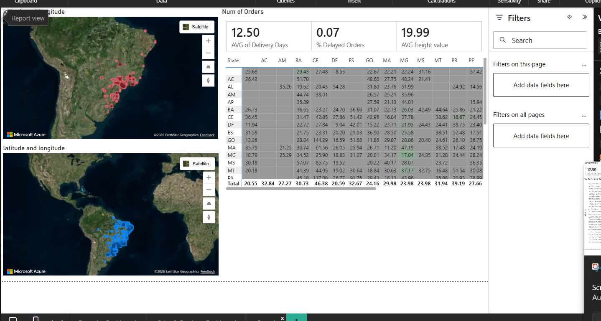
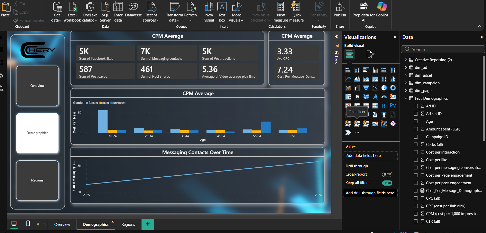
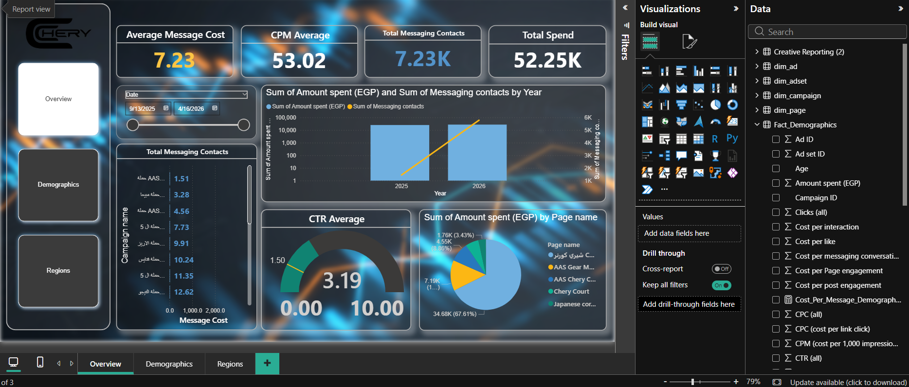
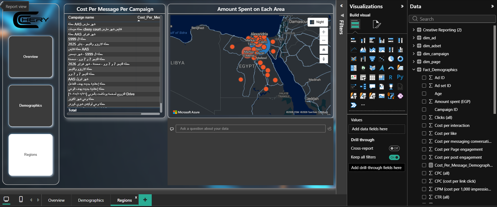

B.Sc. in Computer Science | Ain Shams University (GPA: 3.42)
Experience
Automation Specialist @ Gear Master
Jul 2025 - Present
Core Architecture: GearMaster Pro ERP - RBAC System



Architected GearMaster Pro ERP using React and Node.js, establishing a secure Role-Based Access Control (RBAC) matrix and robust API infrastructure to digitize all automotive center operations.
Engineered automated ETL data pipelines and production-ready Node.js Telegram bots, reducing manual database workloads and administrative overhead by 40%.
Developed responsive Power BI analytical layers focused on operational KPI tracking and predictive inventory forecasting to mitigate resource bottlenecks.
Part-time AI Developer @ Bitline AI
Nov 2024 - Present
Built and operationalized a real-time Student Attentiveness AI System leveraging custom YOLOv8 pipelines to process live multi-stream video feeds for instant engagement analytics.
Developed an Interactive Avatar Web Application combining React, OpenAI Real-time Voice API, and FastAPI to deliver ultra-low latency, seamless voice-to-voice communication.
Optimized batching and parallel model inference pipelines, successfully decreasing system response latency by 35% while sustaining an inference accuracy threshold of >90%.
Managed end-to-end Machine Learning lifecycles encompassing data preprocessing, automated feature engineering, deployment routing, and systematic accuracy drift monitoring.
Highlighted Projects
Students Attentiveness AI System
Python, YOLOv8 & FastAPI
CONFIDENTIAL SYSTEM PIPELINE
Live Cam FeedYOLOv8 CoreInstructor UI
Deployed a computer vision model to assess student engagement in real time, detecting subtle confusion and behavioral patterns from video data to power adaptive teaching analytics dashboards.
Computer VisionYOLOv8Real-time Inference
Interactive Avatar Web App
React, FastAPI & OpenAI API
Developed a bleeding-edge, low-latency conversational avatar web interface. Integrated OpenAI's Real-time streaming protocols with a Python backend to handle concurrent, bi-directional audio streams cleanly.
FastAPIOpenAI APIWebSockets
Subscription Churn Predictor
Python & Machine Learning
Engineered a standalone GUI application designed to forecast critical subscription churn tendencies, outputting clean predictive features to empower retention teams to proactively resolve at-risk contracts.
ClassificationPredictive Analytics
Stroke Risk Predictor
Scikit-Learn & SMOTE
Built an end-to-end predictive classification model to intercept stroke risk trends. Successfully managed extreme dataset class imbalance via advanced SMOTE sampling to elevate minority-class model recall metrics.
Marketing Analytics & Cost Optimization: Engineered comprehensive Meta Ads campaign dashboards in Power BI, tracking over EGP 52K in ad spend, capturing 7.2K+ organic messaging contacts, and optimizing CTR, CPM, and CPC metrics across diverse geographical Egyptian zones.
Data Schema Design: Co-designed and structured core relational database schemas for the proprietary GearMaster Pro ERP ecosystem, ensuring high transactional integrity and standardized historical logging for workshop bookings and volatile parts pricing.
Automation Engineering: Authored robust Python automation routines interacting with external platform webhooks to sync operational transactional data and trigger instantaneous price shift logs.
Operational Reporting: Maintained and distributed recurring management intelligence reports visualizing regional automotive brand demand curves and service point execution performance indexes.
Highlighted Projects
Olist E-Commerce Ecosystem Dashboard
Power BI, DAX & Excel



Processed and modeled a multi-table Brazilian marketplace dataset containing 112K+ granular orders and $12.5M+ total revenue. Designed advanced DAX measures to highlight logistics fulfillment delay rates and regional shipping costs.
Power BIDAX ModelingGeospatial Analysis
Gear Master Performance Ads Control
Power BI & Meta Ads API



Designed a live-connected marketing dashboard tracking EGP 52K+ digital ad distribution. Configured automated visual alert indicators for anomalies in cross-platform CPC and target lead acquisition cost benchmarks.
Marketing AnalyticsPower BIAd-Spend ROI
Behavioral Customer Segmentation
R Programming Language
Implemented unsupervised K-means clustering pipelines within R environments to group client entities according to transactional volume and frequency parameters, building data-backed profiles for focused targeted advertising.
R StudioK-MeansCluster Analysis
Technical Skills (Data Analytics)
Power BI (DAX & Power Query)SQL (MS SQL Server, Azure SQL)SSIS / SSRSPython (Pandas, NumPy)R LanguageData Modeling & Schema DesignTableauExcel Analytics